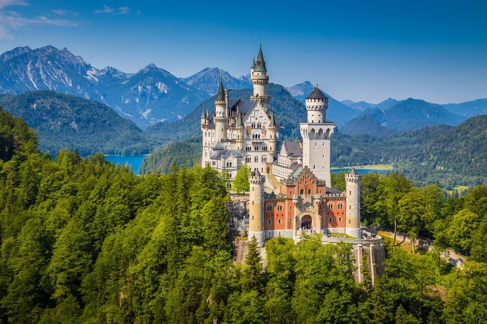
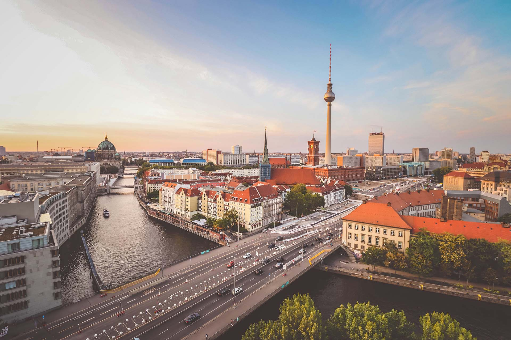
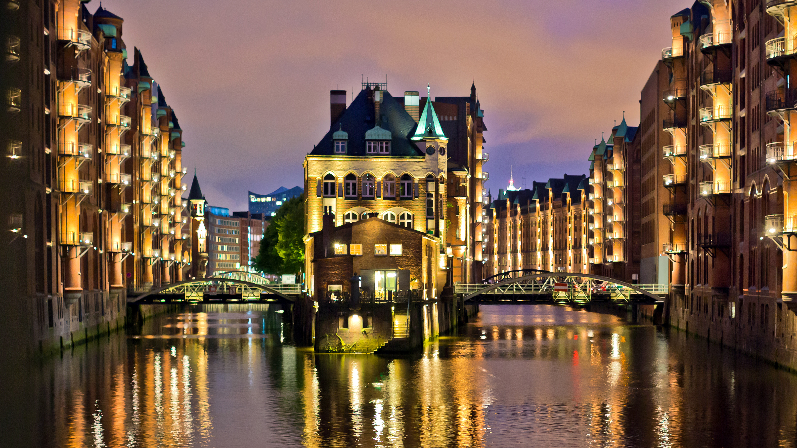
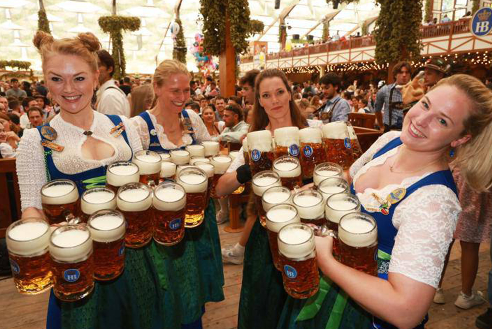
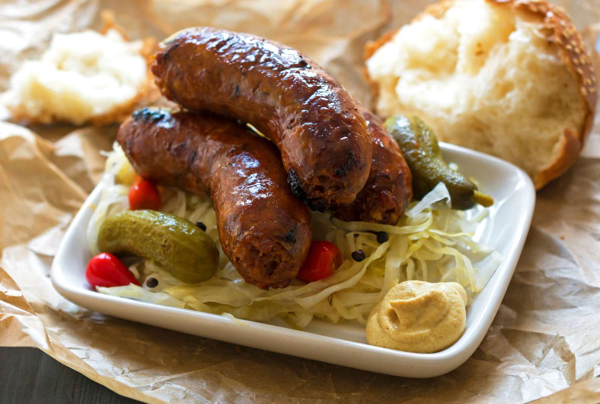
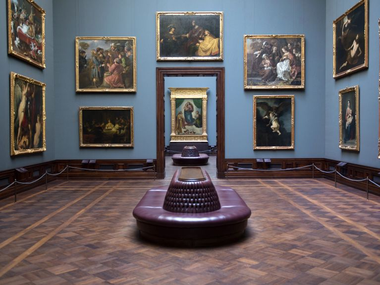

Why Visit Germany?
Germany is one of Europe's most diverse and exciting travel destinations. Whether you're drawn to the medieval architecture of Cologne, the alpine landscapes of Bavaria, or the modern art scene of Berlin, there is always something new to explore.
With excellent public transport, a rich culinary scene, and world-class museums, Germany welcomes millions of visitors every year. Start your journey here and find everything you need to plan the perfect German adventure.
Featured Destinations

Bavaria
Home to Neuschwanstein Castle, the Alps, and Oktoberfest. Bavaria is Germany's most iconic region.
Explore
Berlin
Germany's dynamic capital city — a place where history, art, and modern culture collide.
Explore
Hamburg
Germany's gateway to the world — a vibrant port city with a lively waterfront and rich maritime history.
ExplorePlan Your Trip
Getting Around
Germany has an excellent rail network. The Deutsche Bahn (DB) connects almost every city and town efficiently.
Where to Stay
From budget hostels to luxury hotels and charming guesthouses, Germany offers accommodation for every budget.
Best Time to Visit
Spring (April–June) and autumn (September–October) offer pleasant weather and fewer crowds.
Culture Highlights

Oktoberfest
The world's largest beer festival held annually in Munich every September and October.
Learn More
Food & Drink
Savor hearty sausages, pretzels, schnitzel, and world-famous German breads and beers.
Learn More
Art & Museums
Germany is home to hundreds of world-class museums, galleries, and cultural institutions.
Learn More